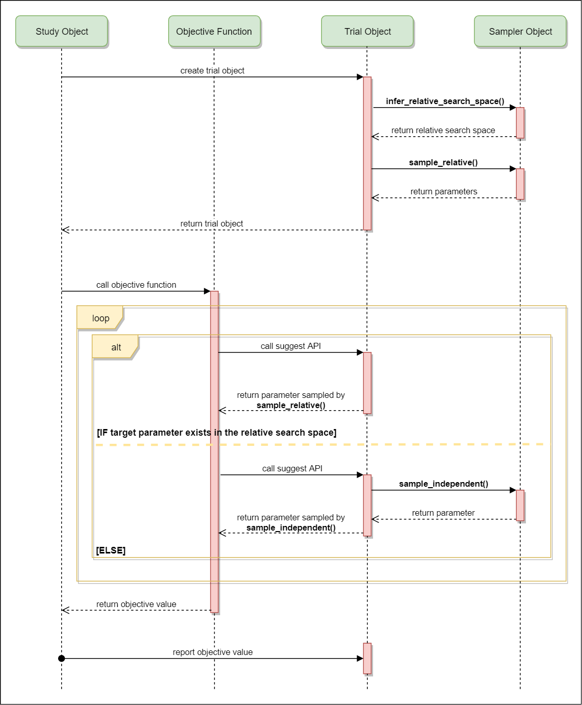

Samplers¶
-
class
optuna.samplers.BaseSampler[源代码]¶ Samplers 基类
Optuna结合了两种类型的 sampling 策略，称为 相对 sampling 和 独立 sampling.
相对 sampling 同时确定多个参数的值，以便 sampling 算法可以使用参数之间的关系（例如，相关性）。相对 sampling 的目标参数是在一个相对搜索空间中描述的。该空间由
infer_relative_search_space()决定。独立 sampling 确定一个单独的参数，并且不考虑不同参数之间的关系。独立 sampling的目标参数不由相对搜索空间描述。
进一步来说，参数是按照以下步骤来采样得出的。在一个 trial 刚开始时，
infer_relative_search_space()会被调用以确定该 trial 的相对搜索空间。然后，sample_relative()方法会被触发，用于从该搜索空间中对参数进行采样。在目标函数的执行过程中，sample_independent()被用于对那些不属于相对搜索空间的参数进行采样。下图描述了一个 trial 的生命周期和上述方法是如何在一个trial 内被触发的。
-
abstract
infer_relative_search_space(study, trial)[源代码]¶ 推断会用于目标 trial 的相对 sampling 的搜索空间。
该方法会恰好在
sample_relative()之前被调用，而由该方法返回的搜索空间会被传入它。那些不包含在这个搜索空间中的参数将用sample_independent()来进行采样。- 参数
study -- Target study object.
trial -- 目标 trial 对象，在修改该对象之前请先复制它。
- 返回
一个包含了参数名和参数分布的字典。
参见
作为以一个
infer_relative_search_space()的实现，请参考intersection_search_space()。
-
reseed_rng() → None[源代码]¶ 重设 sampler 的随机数种子。
该方法由
Study 的实例来调用。而且，如果选项 ``n_jobs>1`的话，它会被并行执行。在那种情况下，这个 sampler 实例会被复制，其中就报错了随机数生成器的状态，因此它们可能会产生同样的 suggestion 值。为了防止出现这个问题，该方法给每一个随机数生成器赋予一个不同的种子。
-
abstract
sample_independent(study, trial, param_name, param_distribution)[源代码]¶ 从给定的分布中采样。
只有当参数不属于
sample_relative()时，该方法会被调用。该方法适用于那些不依赖参数关系的 sampling 算法，比如 随机 sampling 和TPE.注解
当 sampler 采样新参数时，那些失败的 trial 会被内置的 sampler 忽略。因此，失败的 trial 对于 sampler 来说等价于 删除掉的trial.
- 参数
study -- Target study object.
trial -- 目标 trial 对象，在修改该对象之前请先复制它。
param_name -- 参数名
param_distribution -- 确定了 sampling 算法的先验和/或者 尺度的分布对象。
- 返回
A parameter value.
-
abstract
sample_relative(study, trial, search_space)[源代码]¶ 给定搜索空间中的 sample 参数。
该方法会在每个 trial 刚开始时被调用一次，也就是在目标函数执行之前被调用一次。该方法适用于对那些依赖于不同参数之间关系的算法，比如 Gaussian Process and CMA-ES.
注解
当 sampler 采样新参数时，那些失败的 trial 会被内置的 sampler 忽略。因此，失败的 trial 对于 sampler 来说等价于 删除掉的trial.
- 参数
study -- Target study object.
trial -- 目标 trial 对象，在修改该对象之前请先复制它。
search_space -- 由
infer_relative_search_space()返回的 搜索空间。
- 返回
一个包含了参数名和参数分布的字典。
-
abstract
-
class
optuna.samplers.GridSampler(search_space)[源代码]¶ 使用网格搜索的 sampler.
在一个 study 中，利用
GridSampler, trial 会在给定的搜索空间内 suggest 所有可能的参数组合。示例
import optuna def objective(trial): x = trial.suggest_uniform('x', -100, 100) y = trial.suggest_int('y', -100, 100) return x ** 2 + y ** 2 search_space = { 'x': [-50, 0, 50], 'y': [-99, 0, 99] } study = optuna.create_study(sampler=optuna.samplers.GridSampler(search_space)) study.optimize(objective, n_trials=3*3)
注解
如果传进来的
search_space中的所有可能参数组合都已经被评估过了，GridSampler会抛出一个错误。请通过设置合适的optimize()的参数n_trials来避免那些不必要的 trial 在 优化过程中被执行。注解
GridSampler无所谓由 离散 suggestion 方法确定的参数量化，它只是从一个搜索空间中采样一个参数。比如，在下面的代码片段中， 是-0.5或者0.5, 而不是一个整数点， 会被采样成x的值，import optuna def objective(trial): # The following suggest method specifies integer points between -5 and 5. x = trial.suggest_discrete_uniform('x', -5, 5, 1) return x ** 2 # Non-int points are specified in the grid. search_space = {'x': [-0.5, 0.5]} study = optuna.create_study(sampler=optuna.samplers.GridSampler(search_space)) study.optimize(objective, n_trials=2)
- 参数
search_space -- 一个键为参数名值为对应的待选参数的字典。
注解
在 v1.2.0 中被作为一个试验性特性引入。该接口可能在未来的版本中在没有提前通知的情况下被改变。
-
class
optuna.samplers.RandomSampler(seed=None)[源代码]¶ 使用随机 sampling 的sampler.
该 sampler 基于 独立 sampling，要看'独立 sampling' 的细节的话请参考
BaseSampler. '示例
import optuna from optuna.samplers import RandomSampler def objective(trial): x = trial.suggest_uniform('x', -5, 5) return x**2 study = optuna.create_study(sampler=RandomSampler()) study.optimize(objective, n_trials=10)
- Args:
随机数种子。
-
class
optuna.samplers.TPESampler(consider_prior=True, prior_weight=1.0, consider_magic_clip=True, consider_endpoints=False, n_startup_trials=10, n_ei_candidates=24, gamma=<function default_gamma>, weights=<function default_weights>, seed=None)[源代码]¶ 使用 TPE (Tree-structured Parzen Estimator) 算法的 sampler.
该 sampler 基于 独立 sampling，要看'独立 sampling' 的细节的话请参考
BaseSampler. '在每一个 trial 中，对每一个参数， TPE将会拟合一个 Gaussian mixture 模型 (GM)
l(x)来设定最佳目标函数赌赢的参数值集合。而另一个 GMMg(x)则会设置剩余的参数。它选择能最大化l(x)/g(x)的参数。要查看 TPE 算法的细节的话，请参考这里:
示例
import optuna from optuna.samplers import TPESampler def objective(trial): x = trial.suggest_uniform('x', -10, 10) return x**2 study = optuna.create_study(sampler=TPESampler()) study.optimize(objective, n_trials=10)
- 参数
consider_prior -- 当
True时通过一个高斯先验来提升 Parzen estimator 的稳定性。这个先验只有当 sampling 分布是以下这些分布中间的一个时起作用：UniformDistribution,DiscreteUniformDistribution,LogUniformDistribution,IntUniformDistribution, 或者IntLogUniformDistribution.prior_weight -- 先验的权重，该选项用于
UniformDistribution,DiscreteUniformDistribution,LogUniformDistribution,IntUniformDistribution,IntLogUniformDistribution, 和CategoricalDistribution中。consider_magic_clip -- 启用一个启发式算法以限制 Parzen estimator 所使用的高斯分布的最小方差。
consider_endpoints -- 在 Parzen estimator 中计算高斯方差时，请考虑域的端点。 有关启发式计算方差的详细信息，请参见原始论文
n_startup_trials -- 在给定的 trial 次数在同一 study 中完成之前，将使用随机抽样代替 TPE 算法
n_ei_candidates -- 用于计算预期改进的候选样本数。
gamma -- 该函数接受完成的 trial 次数作为参数，并返回 trial 次数以形成一个粗粒度的密度函数。 更多详细信息请参见原始论文
weights -- 该函数接受完成的 trial 次数作为参数，并为它们返回一个权重。 更多细节见 Making a Science of Model Search: Hyperparameter Optimization in Hundreds of Dimensions for Vision Architectures .
seed -- 随机数种子
-
static
hyperopt_parameters()[源代码]¶ 返回 hypoeropt (v0.1.2) 的默认参数。
TPESampler可以由该方法返回的参数值来进行实例化。示例
用 hyperopt 的默认参数创建一个
TPESampler实例。import optuna from optuna.samplers import TPESampler def objective(trial): x = trial.suggest_uniform('x', -10, 10) return x**2 sampler = TPESampler(**TPESampler.hyperopt_parameters()) study = optuna.create_study(sampler=sampler) study.optimize(objective, n_trials=10)
- 返回
包含 hyperopt 的默认参数的字典。
-
class
optuna.samplers.CmaEsSampler(x0: Optional[Dict[str, Any]] = None, sigma0: Optional[float] = None, n_startup_trials: int = 1, independent_sampler: Optional[optuna.samplers._base.BaseSampler] = None, warn_independent_sampling: bool = True, seed: Optional[int] = None)[源代码]¶ 使用 CMA-ES 算法的 sampler.
示例
用
CmaEsSampler来优化一个简单的二次函数。import optuna def objective(trial): x = trial.suggest_uniform('x', -1, 1) y = trial.suggest_int('y', -1, 1) return x ** 2 + y sampler = optuna.samplers.CmaEsSampler() study = optuna.create_study(sampler=sampler) study.optimize(objective, n_trials=20)
请注意，此 sampler 不支持 CategoricalDistribution。如果您的搜索空间包含分类参数，作为代替，建议您使用
TPESampler. 此外，并行优化设置中还有性能改进空间。 这个 sampler 无法使用一些 trial 来更新多元正态分布的参数。参见
你也可以使用
optuna.integration.CmaEsSampler, 它是一个用 cma 库作为后端的 sampler.- 参数
x0 -- 一个包含了 CMA-ES 的初始参数的字典。在默认情况下，每个分布的
lowandhigh的平均数是被采用的。sigma0 -- CMA-ES 的初始标准差。默认情况下，
sigma0会被设置成min_range / 6, 而min_range代表着搜索空间中最小的分布范围。seed -- CMA-ES 的随机数种子。
n_startup_trials -- 除非同一个 study 中指定个数的 trial 已经完成，否则将会采用独立 sampling 而不是 CMA-ES 算法。
independent_sampler -- 一个
BaseSampler实例，它用于独立 sampling.那些并不包含在相对搜索空间中的参数是通过这个 sampler 来采样的。CmaEsSampler的搜索空间 是通过intersection_search_space()来确定的。如果设置成None的话，RandomSampler会作为默认 sampler 被使用。.. seealso::optuna.samplers模块提供了内置的独立 sampler, 比如RandomSampler和TPESampler.warn_independent_sampling -- 如果这是
True, 那么当一个参数的值是通过独立 sampler 来采样时，它会触发一个 warning 信息。注意，由于一个 study 中的第一个 trial 的参数总要通过独立 sampler 来采样，因此这种情况下 warning 信息不会被触发。
-
class
optuna.samplers.IntersectionSearchSpace[源代码]¶ A class to calculate the intersection search space of a
BaseStudy.交叉搜索空间包含着该 study 中目前已完成的 trial 中参数 suggestion 值的分布的交集。如果存在多个拥有同一个名字但是其分布不同的参数的话，那么它们都不会被纳入最终的搜索空间 （也就是说，带有动态范围的参数会被排除）。
注意，该类的实例只应用于一个 study。如果不同的 study 被传入
calculate()的话，一个ValueError会被抛出。-
calculate(study: optuna.study.BaseStudy, ordered_dict: bool = False) → Dict[str, optuna.distributions.BaseDistribution][源代码]¶ 返回
BaseStudy的交叉搜索空间。- 参数
study -- 带有已完成的 trial 的 study.
ordered_dict -- 一个布尔选项，用于确定返回值的类型。如果设置成
False的话，返回的对象会是一个dict.如果设置成True, 返回对象会是一个键（也就是参数）已排过序的collections.OrderedDict.
- 返回
一个包含了参数名和参数分布的字典。
-
-
optuna.samplers.intersection_search_space(study: optuna.study.BaseStudy, ordered_dict: bool = False) → Dict[str, optuna.distributions.BaseDistribution][源代码]¶ 返回
BaseStudy的交叉搜索空间。交叉搜索空间包含着该 study 中目前已完成的 trial 中参数 suggestion 值的分布的交集。如果存在多个拥有同一个名字但是其分布不同的参数的话，那么它们都不会被纳入最终的搜索空间 （也就是说，带有动态范围的参数会被排除）。
注解
IntersectionSearchSpace能以更快的速度提供同样的功能。如果你想尽可能降低运行时间的话，可以考虑使用它。- 参数
study -- 带有已完成的 trial 的 study.
ordered_dict -- 一个布尔选项，用于确定返回值的类型。如果设置成
False的话，返回的对象会是一个dict.如果设置成True, 返回对象会是一个键（也就是参数）已排过序的collections.OrderedDict.
- 返回
一个包含了参数名和参数分布的字典。